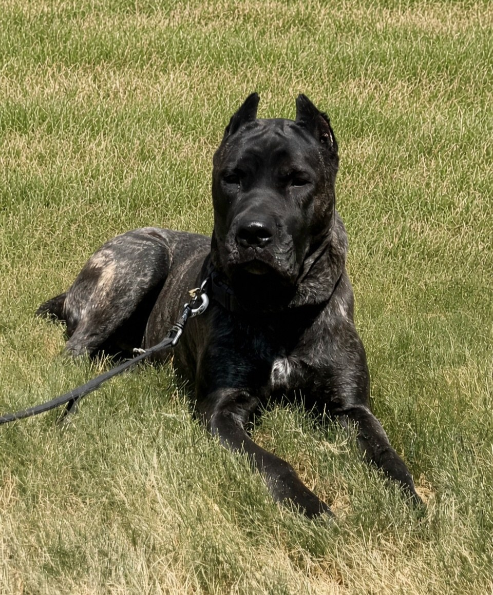
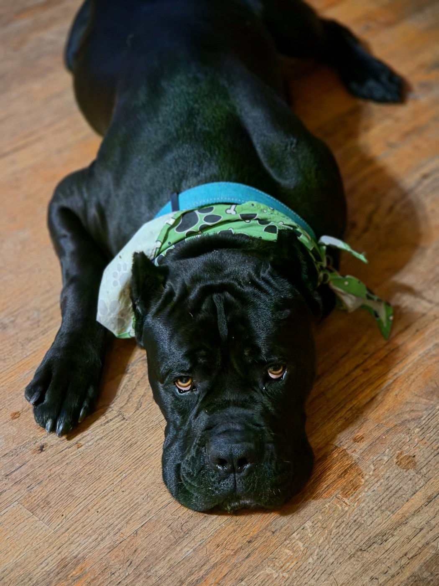
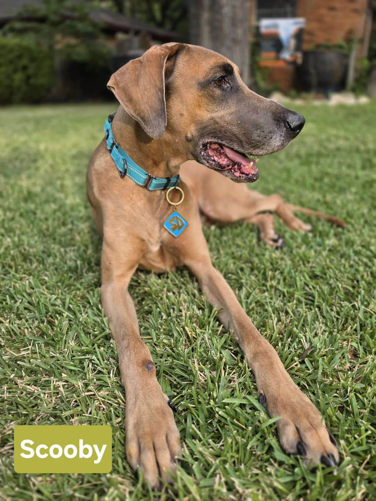
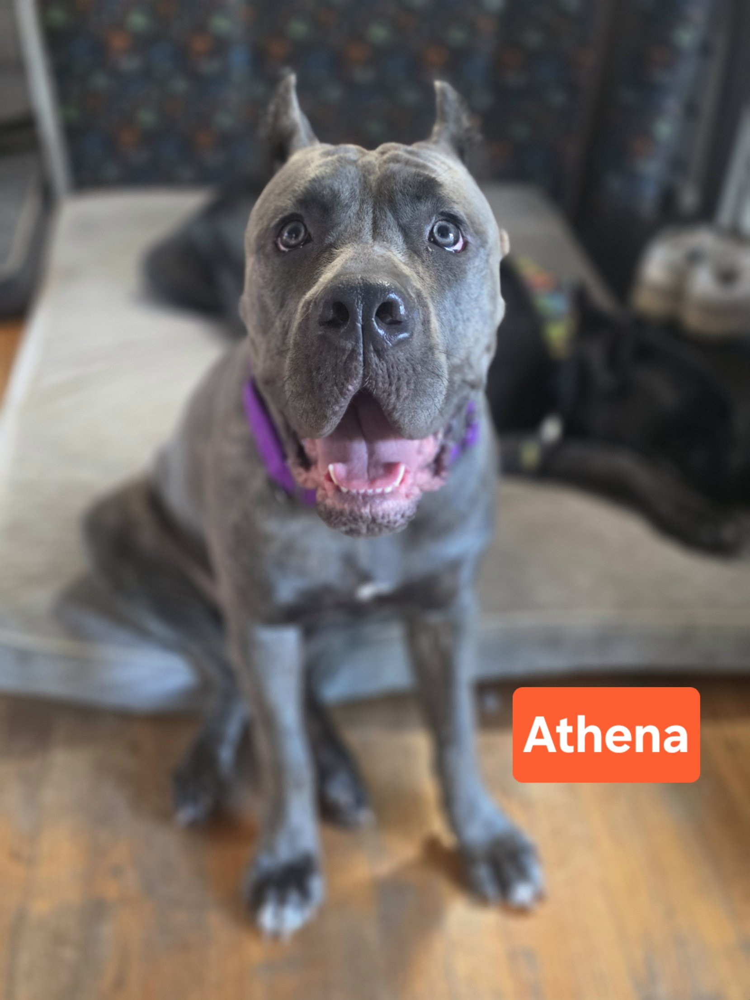

Looking for a home
These are the dogs currently in our care and ready for the right family. Every one of them is vetted and placed through an application and a conversation about your home, because the right match matters more than a fast one.

Hera is a big girl with an even bigger heart. She is steady, affectionate, and happiest right beside her people. She would do well with a family who appreciates the breed and has room for her to stretch out.

Frank is a true Corso: loyal, deeply bonded to his people, and protective of his pack. He is crate trained, house trained and leash trained, and he has lived successfully with a large pack of dogs. He needs slow, controlled introductions to new people and dogs, and he wears a muzzle at the vet as a precaution until he is comfortable. For an experienced owner who understands the breed, he is a wonderful dog.

Trained, affectionate and ready for adventure. Scooby has professional obedience work behind him, including off-leash recall, and he is fully house and kennel trained. He will hike all day and then settle at your feet all evening.

Athena is a young, bright girl still growing into herself. She has plenty of puppy energy and a sweet, people-focused streak, and she would thrive with a family ready to keep up her training and give her structure as she matures.
Fill out the application and we will reach out to talk through your home, your schedule and what you are looking for. We place every dog under a written adoption agreement, and we stay available to our adopters for the life of the dog. Adoption fees go straight back into vetting the next dog we pull.